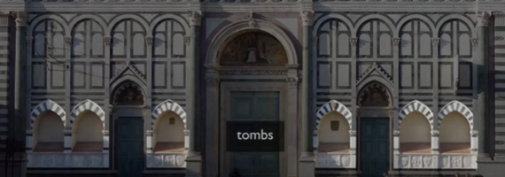
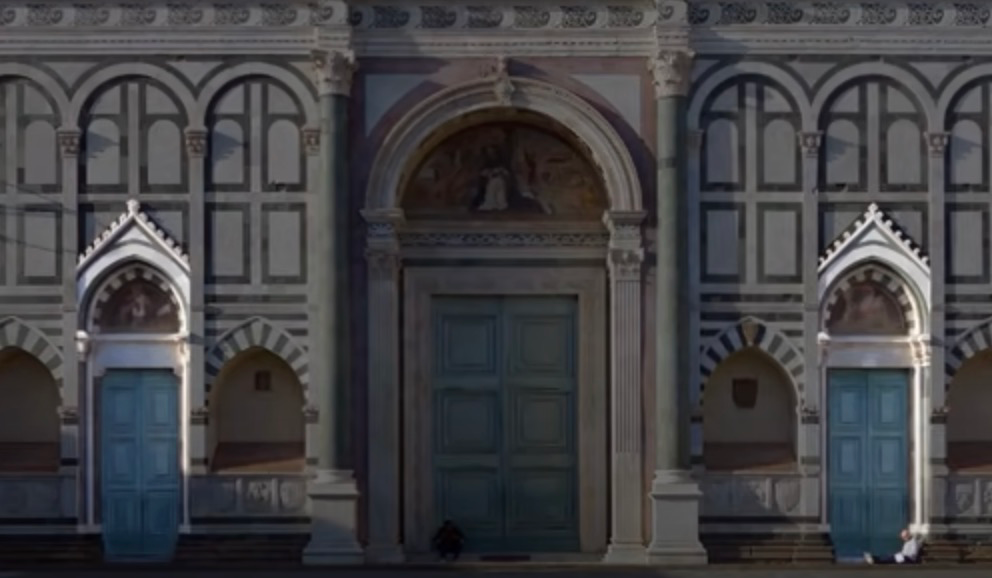
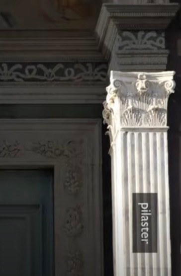
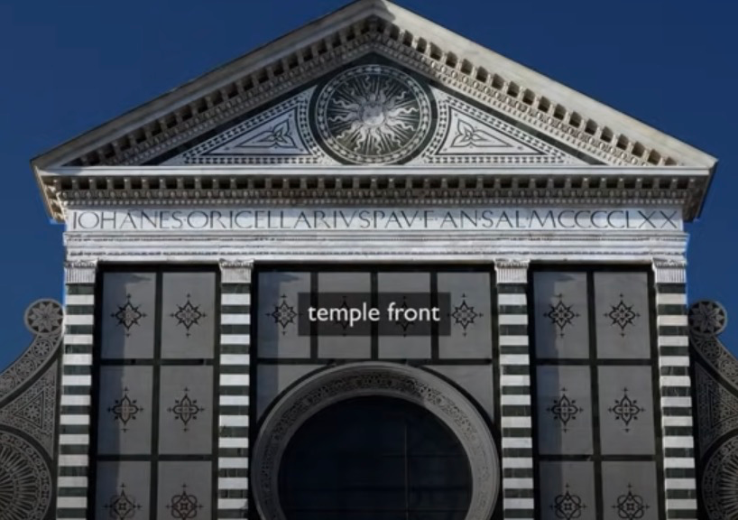
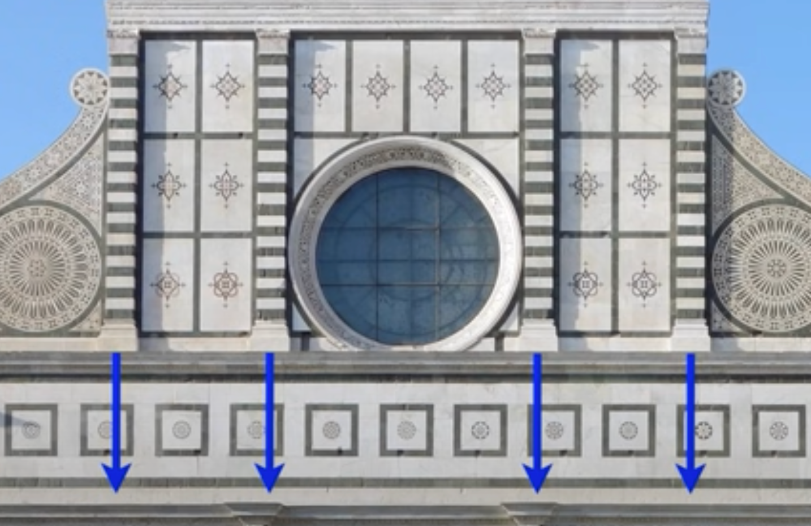
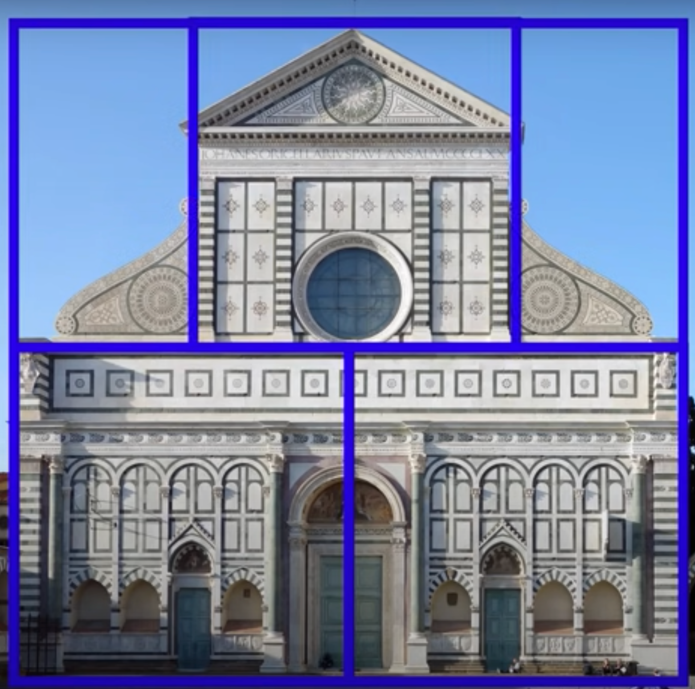
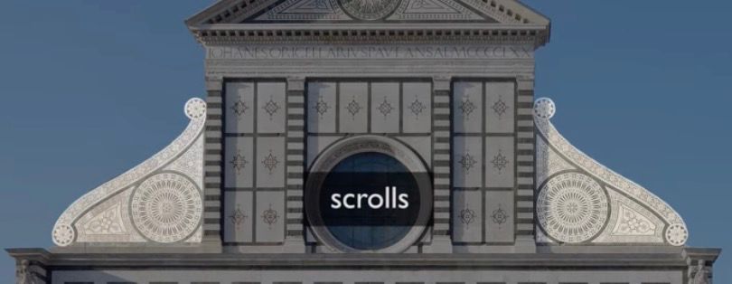

Harmony in Stone: Unveiling the Beauty of Santa Maria Novella Facade through Alberti’s Lens
Abstract—This essay explores the impressive design of Santa Maria Novella Facade, a prime example of architecture in Early Modern Europe from 1400 to 1600. The main focus is on the significant impact of Leon Battista Alberti, a renowned architect of that era, and how he incorporated Vitruvian principles to create a harmonious and visually appealing facade. The analysis includes an overview of Santa Maria Novella Church, a detailed examination of the facade’s architectural features, and an exploration of the close connection between Alberti’s design philosophy and the timeless principles of Vitruvius. By delving into the layers of influence and innovation, this paper aims to shed light on the importance of Santa Maria Novella Facade as a reflection of changing theories and histories in architecture during the Early Modern period.
Keywords: Vitruvius, Santa Maria Novella, Leon Battista Alberti
1 Introduction
The time between the 15th and 17th centuries in Europe, called the Early Modern period, saw a special coming together of art, intellect, and cultural revival known as the Renaissance. During this time, classical ideas were brought back to life, and visionary architects played a key role in transforming the way buildings were designed. Among the many impressive structures of this period, the Santa Maria Novella Church in Florence is a shining example of architectural excellence. Its facade is a clear demonstration of the creative design principles that defined this era.
1.1 Revealing Santa Maria Novella Facade
At the center of this exploration is the Santa Maria Novella Facade, a remarkable architectural masterpiece that captures the essence of the Early Modern period. This paper aims to uncover the details of this facade, tracing its origins from the creative mind of Leon Battista Alberti, a versatile genius whose impact extended into architecture, philosophy, and the arts. Built between 1400 and 1600, the Santa Maria Novella Facade serves as a window through which we can explore the merging of architectural theories, artistic expression, and the lasting principles of Vitruvius.
1.2 Purpose and Background
This paper aims to explore the intricate details of the Santa Maria Novella Facade, uncovering the design principles that crafted its balanced appearance. By looking at how Alberti’s ideas and Vitruvius’ classical concepts interact, we want to reveal why this facade is important in the broader scope of Early Modern European architecture. As we undertake this journey, we hope to comprehend not just the visible results of Alberti’s brilliance but also the intellectual influences that shaped his design decisions.
1.3 Why Santa Maria Novella Facade?
I chose to focus on the Santa Maria Novella Facade for its importance in both time and architectural thinking. And, of course, I’ve been there is the most important reason to pick Santa Maria Novella as the topic of our paper. Built between 1400 and 1600, the facade represents the changes in architectural theories during this crucial period. Additionally, being credited to Leon Battista Alberti, a key figure in the Renaissance, links the facade to a rich blend of intellectual and artistic endeavors. By selecting Santa Maria Novella Facade for our study, we aim to uncover not only the physical attractiveness of the structure but also the intellectual influences behind its creation. This provides a nuanced understanding of the theories and histories that shaped Early Modern European architecture.

2 Leon Battista Alberti, the Designer
2.1 Background and Early Life
Leon Battista Alberti, a versatile individual of the Renaissance, went beyond the limits of architecture, philosophy, and the arts. Born in 1404 in Genoa, Italy, Alberti’s early life was filled with scholarly pursuits, influenced by the growing intellectual atmosphere of the Italian Renaissance. His strong desire for learning drove him to explore different subjects, from mathematics to literature, forming the basis for a well-rounded perspective that would later show in his architectural creations.
2.2 Architectural Talent
Alberti’s journey in architecture began as he deeply engaged with the study of classical texts, especially Vitruvius, which played a vital role in shaping his design principles. Alberti’s career trajectory began with his first financially secure position, which involved serving a pope, although the specific pontiff remains to be identified. Alberti’s activities were centered in Florence during the years 1434 to 1436, a period marked by significant cultural and intellectual ferment. His architectural success reached new heights with the creation of the Rucellai Palace in Florence1, a building that illustrated his innovative approach by blending classical elements with modern sensibilities.
However, a pivotal moment in Alberti’s career occurred when he participated in designing the Santa Maria Novella Facade. This architectural wonder not only demonstrated his technical skills but also marked a significant change in Renaissance architecture. Alberti’s impact went beyond constructing buildings; he formulated an architectural theory that aligned with the humanist ideals of the time.
2.3 Humanism and Architectural Ideas
Alberti’s ideas about architecture, explained in his book “De re aedificatoria”2, highlighted the human-centered principles of proportion, harmony, and balance. He thought that architectural beauty should reflect the harmony observed in nature, for example, delving into themes of masculinity. He also believed that human body’s proportions are perfect created by nature and these could be used by an architect for designing of building3. Alberti also conceptualized a house as a surveillance system, reflecting his interest in control and observation. While deeply engaged in theoretical pursuits, Alberti’s focus on design was evident, although he may not have always been directly involved in its execution. This multifaceted approach characterized Alberti’s contributions to architecture, art, and philosophy, cementing his legacy as one of the Renaissance’s most influential figures. And his book, often seen as the first modern guide on architecture, not only organized architectural principles but also raised the architect’s role to that of a knowledgeable person, adding to the intellectual standing of the profession.
2.4 Heritage and Influence
The influence of Leon Battista Alberti goes beyond the buildings he created. He shaped the classical revival that defined the Renaissance, leaving a lasting impact on future generations of architects. As a humanist architect, Alberti connected the past with the present, making a lasting mark on the world of architecture. Through his writings and designs, Alberti’s intellectual legacy became an integral part of Renaissance thinking, highlighting the close connection between architecture and the broader cultural context of that time. In the context of Early Modern Europe, Alberti’s contributions make him a significant figure whose ideas and innovations continue to echo through the halls of architectural history.
3 Overview of Santa Maria Novella Church
3.1 Historical Background
Situated in the heart of Florence, Italy, the Santa Maria Novella Church is a symbol of the diverse blend of art, culture, and spirituality during the Renaissance. Its story dates back to the 13th century when the Dominican Order decided to build a new church on this location4. Construction started in 1279, and throughout the years, the church underwent changes, expansions, and enhancements that mirrored the changing artistic and religious tastes of the period. This church also has a unique place in Florentine history, serving as a central hub for Dominican friars and a key location for religious ceremonies and artistic support.
3.2 Architectural Importance
While the entire Santa Maria Novella Church showcases remarkable Gothic and Renaissance architecture, it’s the facade that truly captivates admirers. The facade, with its detailed design and classical proportions, serves as the welcoming face of the church, making a strong visual impact on worshippers and visitors alike.

3.2.1 Style Elements
The facade skillfully combines Gothic and Renaissance features, marking the shift between these architectural styles. Elaborate tracery and pointed arches, characteristic of Gothic architecture, coexist with classical columns and pediments inspired by ancient Roman and Greek styles. This blending not only reflects the diverse influences of the Renaissance but also mirrors the broader cultural exchange between the medieval and modern worlds.
3.2.2 Alberti’s Influence
The role of Leon Battista Alberti in the development of the Santa Maria Novella Church is most pronounced in its facade. He was commissioned by Giovanni di Paolo Rucellai to complete the facade, beginning work on the church in 14585. Alberti’s humanistic principles of proportion and harmony find expression in the balanced composition of the facade. The use of classical orders, such as Corinthian columns, reflects Alberti’s reverence for classical antiquity, while the careful attention to mathematical proportions demonstrates his commitment to architectural beauty grounded in rationality.
3.3 Facade within the Church Structure
Beyond just looking beautiful, the Santa Maria Novella Facade is really important for how people experience the space inside the church. It’s the first thing you see when you enter, setting the stage for all the religious and artistic wonders inside. The design, with a main entrance in the middle surrounded by columns and topped with a triangle shape, makes you focus on what’s important inside.
The facade isn’t just pretty decorations, it tells a story in stone, sharing theological and symbolic messages. Sculptures on it, like panels and statues, show scenes from the Bible and the lives of saints, encouraging worshippers to think about these stories as they enter the sacred space. This mix of art and architecture shows how the Renaissance saw spiritual and aesthetic parts coming together.
3.4 Summary
In short, the Santa Maria Novella Church, with its rich history and beautiful architecture, gives us a great place to explore the importance of the facade. The facade, being the face of this old place, captures the Renaissance spirit, bringing together different architectural styles and representing the ideas of the time. As we look deeper into the details of the facade, we discover not only a visually pleasing display of artistic skill but also a deep story woven into the fabric of Early Modern European history and culture.
4 The Facade and Alberti’s Design Philosophy
As mentioned before, Santa Maria Novella is an important Gothic church here in Florence and is one of the two mendicant churches in the city. It was founded by the begging order, the orders of monks who begged for a living. Alberti was coming here in the mid-15th century and its patron was Giovanni Rucellai for whom he also designed a palace just a few blocks away. Rucellai inherited the patronage rights to this church, but he inherited it from his family who had already begun to design the facade.
Alberti had some serious problems here because he was a classicist and he wanted his architecture to conform to what he believed to be the ideals that were based on perfect geometry and rational order and proportion. And copying the rules of architecture handed down from ancient Rome via the ancient Roman architect Vitruvius. The problem is that this was a Gothic church and Gothic is anything but orderly6. So he took this gothic church and on it put a classical facade that also recalls the Romanesque tradition of Italy. Specifically the Baptistery of Florence and also the church of San Miniato al Monte which is just outside the center of the city of Florence7.
4.1 Gothic Heritage and Preexisting Facade
Alberti faced a significant challenge when tasked with designing the facade of Santa Maria Novella. Not only was the church of Gothic origin, but it also already possessed a partially completed facade adorned with alternating white marble and green stone in linear geometric patterns. While the extent of the preexisting facade remains uncertain, evidence suggests the presence of several tombs, of which six have endured to this day. Interestingly, these niches, once intended for entombment, now often escape modern recognition.

Above the tombs, Gothic arches adorn the facade, further complicating Alberti’s task of harmonizing his classical vision with the existing structure. Despite these challenges, Alberti ingeniously approached the lower story of the facade by framing it. This framing technique is evident in the placement of columns accompanied by piers at each end, each featuring Corinthian capitals.

4.2 Reimagining Entryways
In the center of his design, Alberti revolutionized the modest original doorway, drawing inspiration from the grandeur of the Pantheon. The previous entryway, albeit small in scale, found its transformation into a magnificent portal under Alberti’s craftsmanship. Interestingly, the visualization of the original doorway is facilitated by the existence of two earlier doorways that still endure, providing glimpses into the church’s architectural evolution.

To delineate the building’s edges, Alberti employed pilasters adorned with Corinthian capitals, thus establishing a visual boundary that enhances the facade’s aesthetic appeal. Moreover, he crowned the entrance with a coffered vault, adding a touch of sophistication and grandeur to the facade’s central focal point.

4.3 Columns and Pediments
Alberti’s strong love for ancient classical styles is clear in the decorative parts of the facade8. At the top of the facade, echoes of ancient Greek temple fronts emerge, particularly evident in the pediment resembling that of the Parthenon. Squared attached columns, especially the Corinthian ones, and pilasters provide structural support for the triangle-shaped top, creates a clear order and makes the facade look impressively large, evoking a sense of classical grandeur. The columns, with their ridged shafts and acanthus leaf tops, add to the overall height of the design, recalling the proportions seen in old Roman temples9

4.4 Deviations from Classical Norms
However, Alberti encountered a challenge in maintaining strict adherence to classical architectural principles, notably concerning the alignment of pilasters. The four pilasters supporting the pediment above fail to align with those below, deviating from conventional classical practice. Alberti’s ingenious solution lies in creating a distraction through the introduction of an attic zone filled with decorative patterns. This strategic design choice creates a visual separation between the upper and lower sections of the facade while maintaining an overall sense of geometric order.

4.5 Geometric Harmony
Remarkably, the entire facade conforms to a square framework, further subdivided into smaller squares. The bottom zone of the church comprises two squares, while a single-centered square dominates the area above. This geometric organization contributes to the facade’s sense of coherence and balance.

4.6 S-Shaped Scrolls and Symbolism
To address the challenge of integrating the towering nave with the shorter aisles, Alberti employs S-shaped scrolls as a unifying motif between the top and bottom stories. Borrowed from Brunelleschi’s Dome lantern nearby, these scrolls serve as elegant connectors, accentuated by rosettes that echo the round window at the building’s center. Symbolically, the rosette and the child’s face within the sunburst pediment communicate themes of resurrection and the afterlife, adding depth to the facade’s narrative.

4.7 Rucellai and Medici Influence
Noteworthy inscriptions and decorative elements pay homage to the church’s patrons and their aspirations. Giovanni Rucellai’s name prominently appears, accompanied by his family’s insignia symbolized by windblown sails. These sails, representing the family’s quest for salvation through faith, underscore their devoutness despite their lesser prominence compared to the powerful Medici family, whose crest adorns the central doorway. This juxtaposition highlights the Rucellai family’s loyalty to the Medici, enriching the facade’s historical and social context.
4.8 Summary
Alberti’s facade design for Santa Maria Novella elegantly combines classical elements with innovative solutions. Inspired by ancient Roman and Greek styles, the facade exudes timeless charm with its sturdy columns and Parthenon-like pediments.
Despite challenges, such as pilaster misalignment, Alberti’s creativity shines through. His introduction of a decorative attic zone cleverly resolves architectural discrepancies while maintaining overall harmony.
In essence, Alberti’s facade for Santa Maria Novella is a masterful blend of classical influences and clever design, resulting in a visually captivating architectural marvel.
5 Santa Maria Novella Facade, Alberti and Vitruvius’ Principles
The Santa Maria Novella Facade stands as a harmonious testament to the enduring influence of Vitruvius’ architectural principles during the Renaissance. In examining the facade through the lens of Vitruvian ideals—firmitas (strength), utilities (functionality), and venustas (beauty) 10—a profound connection emerges, emphasizing the importance of balance, proportion, and appropriateness in architectural design.
5.1 The Vitruvian Ideals
5.1.1 Firmitas: Strength
Vitruvius talked about firmitas, meaning buildings should be strong and solid. This idea is clearly seen in the Santa Maria Novella Facade’s sturdy design. The facade, using classical styles carefully and paying close attention to being strong, follows Vitruvius’ focus on stability and lasting power. The Corinthian columns holding up the triangle top show strength, emphasizing the facade’s commitment to being well-built. Alberti, following Vitruvius closely, turned the idea of firmitas into the very stones of the facade, making sure the structure stands strong and lasting.
5.1.2 Utilities: Functionality
Vitruvius also talked about utilities, which means buildings should be useful. This principle is visible in the Santa Maria Novella Facade, which works both as a pretty entrance and a practical way into the church. The main entrance, with pilasters on each side and sculptures, is not just a nice focal point but also a practical way to get inside. Alberti’s mix of beauty and usefulness matches Vitruvius’ idea that architecture should be a useful art that meets the needs of the people who use it. The facade, with its perfect mix of shape and purpose, shows that utilities is still important in how buildings are designed.
5.1.3 Venustas: Beauty
Vitruvius also talked about venustas, which means buildings should be beautifully delightful. This idea is most obvious in the Santa Maria Novella Facade. Alberti’s careful attention to shapes and how things look turns the facade into a stunning sight that captures anyone who sees it. The mix of classical styles, sculptures, and precise shapes makes the facade not only a delight for the eyes but also something that matches the classical beauty Vitruvius admired. In the pursuit of delightful beauty, the Santa Maria Novella Facade becomes a celebration of timeless aesthetic ideals that go beyond changing times and cultures.
5.1.4 Harmony, Proportion, and Moderation
Vitruvius, in what he wrote, talked a lot about the importance of harmony, proportion, and moderation in architecture. The Santa Maria Novella Facade shows these ideas in action. The way sculptures work together, how columns and pilasters are set up in just the right size, and not putting too much decoration on it all follow Vitruvius’ ideas that never get old. Alberti, who followed Vitruvius closely, made sure the facade followed these ideas, creating a design that feels balanced, symmetrical, and just right.
5.2 Shared Principles
Alberti’s architectural beliefs, as explained in his book “De re aedificatoria” mirror the fundamental principles established by Vitruvius. The focus on firmness, utility, and beauty as the essential principles of architectural design, initially put forth by Vitruvius, gained new expression in Alberti’s writings. Alberti embraced Vitruvius’ call for balanced proportions, exact mathematical measurements, and a combination of arts and sciences, revealing a deep alignment between their architectural philosophies.
5.2.1 Humanistic Proportions and Harmony
Alberti’s commitment to humanistic ideals is prominently evident in the proportions and harmony of the Santa Maria Novella Facade. In “De re aedificatoria”, Alberti emphasizes the use of harmonic proportions derived from the human body, especially males, suggesting that a well-designed building should mirror the balanced proportions found in nature.
He explain the harmony of proportion could be achieved in such a manner “nothing could be added, diminished or altered expect for the worse”. It simply means that one should go for perfection in the system of proportion; one should explore many options before finalizing the best one. He created a system of architecture based on the ratios 2:1 and 3:1 suggested by the Timaeus of Plato in ancient Greece and based on musical scale. He reasoned that “what is pleasing to the ear should be pleasing to the eye.” He has applied the system of proportion for designing of the two buildings namely Santa Maria Novella in Florence and San Sebastiani in Mantua, Italy11.

The facade, with its carefully orchestrated arrangement of pilasters, columns, and decorative elements becomes a testament to Alberti’s belief in the intrinsic beauty of proportional relationships.
5.2.2 Integration of Classical Ideals
Both Alberti and Vitruvius shared a passionate enthusiasm for classical antiquity and aimed to revive the architectural principles of ancient Rome and Greece. The Santa Maria Novella Facade stands as a tangible representation of this fusion of classical ideals. The use of classical columns, careful attention to proportions, and inclusion of classical motifs showcase the joint vision of Alberti and Vitruvius in creating architecture that pays tribute to the timeless wisdom of the classical world.
5.3 Legacy of a Harmonious Synthesis
The connection between Alberti, Vitruvius, and Santa Maria Novella illustrates a harmonious blend of tradition and innovation. Vitruvius became a fundamental guide for architectural education during the Renaissance and continued to wield influence in the centuries that followed. This treatise, widely translated and studied at the time, served as a wellspring of ideas for architects aiming to comprehend and reproduce the magnificence of classical architecture. Alberti, building upon Vitruvius’ principles, injected fresh vitality into architectural thinking, ushering in a Renaissance that embraced both classical wisdom and humanistic ideals. This dynamic interplay between the ancient and the contemporary not only defined the Renaissance but also set the stage for the development of architectural theory and practice in the centuries that followed.
6 Conclusion
The process of crafting this paper has been an enlightening journey, providing me with a thorough understanding of the Santa Maria Novella Facade. Through meticulous exploration, I uncovered the intricate details that reveal the deep-seated connection between the architectural ideologies of Leon Battista Alberti and the ancient Roman architect Vitruvius. This facade, nestled in the vibrant heart of Florence, transcends its physical existence, emerging as a dynamic testament to the intellectual currents that molded the Renaissance and persist in influencing architectural discussions.
Furthermore, this endeavor has been a valuable part of my studies in “Theories and Histories of Architecture in Early Modern Europe 1400–1600.” It has not only enhanced my grasp of architectural principles during this pivotal period but has also been a meaningful contribution to the insights gained in this course. I am immensely grateful to Professor Barbara Arciszewska for her patient and vibrant teachings, which have enabled someone like me with an engineering background and no prior exposure to European architectural culture to develop a preliminary understanding of this fascinating field.
References
[1] R. Hatfield, “The funding of the façade of santa maria novella,” Journal of the Warburg and Courtauld Institutes, vol. 67, pp. 81–128, 2004, Available: https://www.jstor.org/stable/ 40026027
[2] P. W. Lehmann, “Alberti and antiquity: Additional observations,” The Art Bulletin, vol. 70, pp. 388–400, Sep. 1988, Available: https://www.jstor.org/stable/3051174
[3] Ar. G. Gangwar, “Principles and applications of geometric proportions in architectural design,” Journal of Civil Engineering and Environmental Technology, vol. 4, pp. 171–176, Jun. 2017, Available: https://www.researchgate.net/publication/317725370
[4] B. E. Roy, “The façade of santa maria novella: Architecture, context, patronage and meaning” Department of Art History, McGill University, Montreal, Aug. 1997, Available: https://escholarship.mcgill.ca/concern/theses/1544br19b
[5] Dr. S. Zucker and Dr. B. Harris, “Alberti, façade of santa maria novella, florence,” Smarthistory, Oct. 2016, Available: https://smarthistory.org/alberti-santamarianovella
Footnotes
Hatfield, 2004, 67, 81–128.↩︎
Lehmann, 1988, 70, 388–400. Alberti composed the first architectural of the Renaissance between 1443 and 1452 in Rome.↩︎
Gangwar, 2017, 4, 171–176.↩︎
Roy, 1997.↩︎
Lehmann, 1988, 70, 388–400.↩︎
Zucker and Harris, 2016.↩︎
Zucker and Harris, 2016.↩︎
Lehmann, 1988, 70, 388–400.↩︎
Gangwar, 2017, 4, 171–176.↩︎
Gangwar, 2017, 4, 171–176.↩︎
Gangwar, 2017, 4, 171–176.↩︎